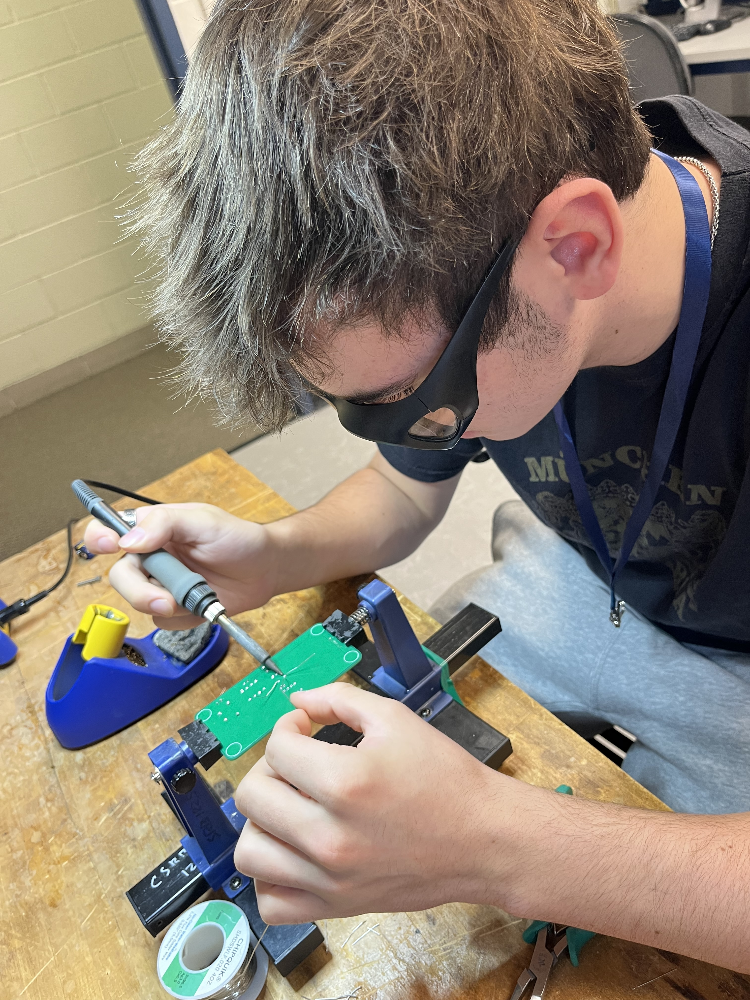
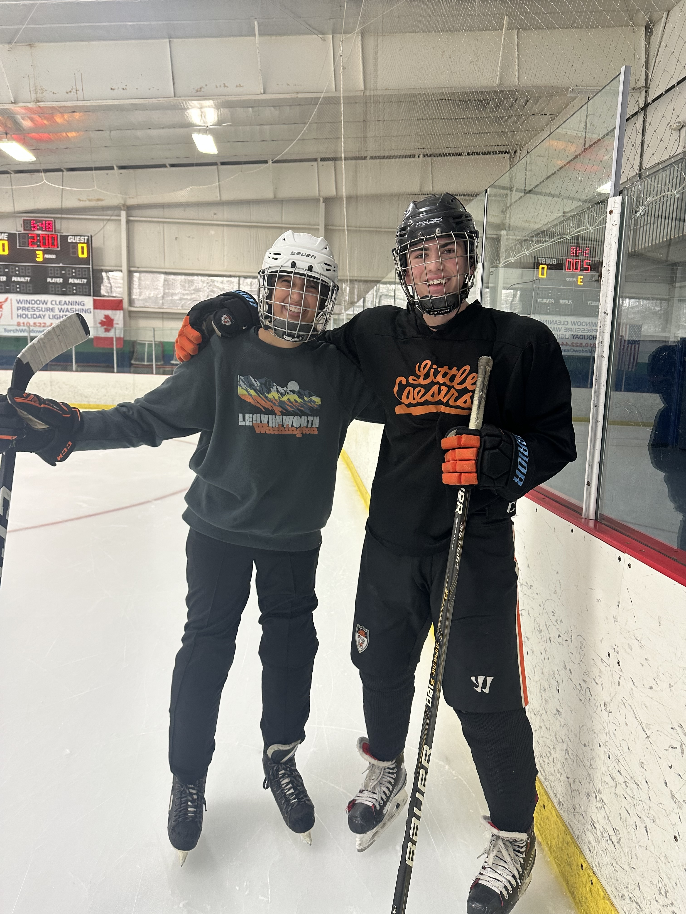

{kind=link}
Attended First Hackathon - MHacks17
Built a restaurant recommendation service using Flutter, Google Maps API, and Google Places API
I am currently a 2nd year Computer Science and Engineering student, and Undergraduate Researcher at the University of Michigan. I am very passionate about my work and excited to step deeper into the world of technology and business. I have experience in data structures and algorithms with C++ and Python, as well as Javascript/React for web development. I am working on finding a specialty, and hopeful to secure a Software Engineering internship for the summer of 2025.
 Along with my interests in technology, I love sports, travel, and weightlifting. I am a lifetime hockey player (since retired) and a big Michigan Hockey fan now. While the city of Ann Arbor is great, I am looking forward to expanding my international travel with studying abroad or temporary housing after graduation. I have also really enjoyed working in the Food Service Industry for the past couple years. I get the opportunity to meet lots of people and work in a fast paced environment. Seeing how a high-level Restaurant operates has definitely inspired my own interest in cooking too.
Built a restaurant recommendation service using Flutter, Google Maps API, and Google Places API
Tough to live up to the 15-0 National Champions, but beating USC was an unbelievable experience
I am the Lead Software Developer for this project, working closely with the mechanical team to model particle dynamics in low gravity environments
Implementing heaps for priority queues, using Dijkstra's or A* for graph traversal, and using high level sorting algorithms
Computer Science Major / Mathematics Minor
-Data Structures and Algorithms I & II
-Discrete Mathematics
-Linear Algebra
-Differential Equations
-Web Systems/Networks
-Theory of Computation
-Probability
-Operating Systems
-Artificial Intelligence
-Applied Parallel Programming with GPU's
-Computer Vision
-Numerical Methods
{kind=link}
{kind=link}
{kind=link}